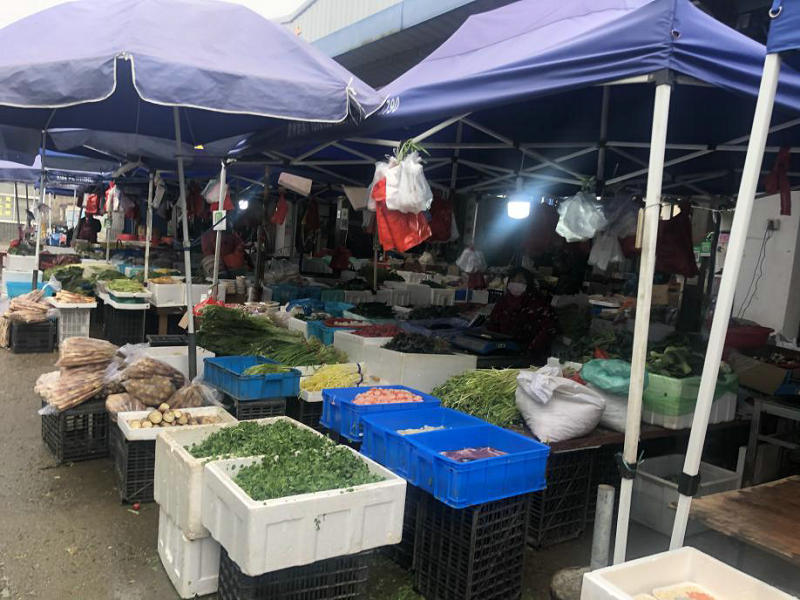

口述实录｜我就是那个“疑似”
原文链接 备份链接 现在武汉那些专门的传染病医院，床位紧张，还有不少人拿着被子铺盖在医院输液，等待入院。我去复查时也看到有类似“一床难求”的情况。我还算是不幸中的万幸吧，自己吃药加上在家隔离就恢复了。 口述 | 余 毅（化名） 整理 | …
记者手记|疫情下的江中小岛镇江扬中：防控到位 井然有序 温情难阻
2020-02-03 13:39 作者：潘心洁 张玉 来源：中国经营网
特约撰稿 潘心洁 本报记者 张玉 镇江扬中 上海报道
年初三一大早，一排银灰色厚实的铁栏杆挡住了潘欣（化名）小区的北门，物业工作人员戴着口罩站在栅栏边，口中喊着“不让过，走南门”，南门物业手中的小本子一直不放下，他要登记所有来访人员。
几乎是一夜之间，位于江苏省镇江市的江中小岛扬中，入岛的主要交通道路都被管控，岛内也各处拦断。
作为江中小岛，扬中与外面的连接除了渡轮就是几座桥，这几年来渡轮慢慢被空置了，几座主要桥梁成了人们与外界联系的主要通道。而随着疫情的不断扩散，“一桥禁止通行”，“幸福大桥关闭”，“泰州大桥排起了大长龙”，小岛独立于长江之上。不过，疫情形成的地理距离并为阻隔人们之间心的沟通。
入岛路径皆被管控
1月24日24时，江苏省启动突发公共卫生事件一级响应。26日，扬中所在的镇江市确诊2例感染，1例在丹阳，1例在新区。镇江市疫情防控指挥部随即发布一级响应措施的通告，一方面要求社区实施地毯式管理，做好疫情信息搜集和后续处理；另一方面，在车站、港口、渡口、国省道、高速公路口等出入镇江通道，都设置了卫生检疫站点和临时观察室，实施强制卫生检疫措施，要求所有湖北地区来镇人员主动进行健康申报和体温检测。
与此同时，26日扬中防疫部门宣布，自当日24时起扬中一桥、幸福大桥进行临时关闭，此外，扬中三桥、泰州大桥、幸福二桥、扬高汽渡等卡口也有人24小时值守，对进入扬中车辆和人员进行严格的体温检测。
至此，扬中主要入岛路径皆被管控。
（连夜设置卡口/由受访者提供）

（主要通道关闭提示/由受访者提供）

（检测卡口/由受访者提供）
此外，据可靠消息，在无锡确诊的1例男子为扬中油坊镇人士，去无锡之前曾在家中停留数日，为防患于未然，家中父母也已被隔离观察。
大年初一，因居委会提前就每家每户上门派发了倡议书，整个小区几乎没有人员走动。
以往逢至年关，回乡的人多了，住在敬老院中的老人们都被孩子接回了家，跟亲戚朋友们扯闲话、唠家常。今年，直至初三小区中也鲜有见到出门走动的老人。通过儿女们的帮助，老人们互相通过视频问候。
（超市中面类商品被抢购一空）

（人烟稀少的菜市场）
心的交流无法阻隔
疫情无情人有情。1月26日下午，扬中全市正在休假的医护人员和政府工作人员接到通知开始正常上岗工作。家住西来桥镇的扬中市人民医院护士冯玉（化名）也不例外。

（小区关闭北侧大门）
过完初一，冯玉就立刻奔赴所在医院，回到了岗位。原本初二下午有半天假期可以回西来桥岛，但听闻二桥即将封闭，她放弃了回家的计划。“如果回去了，下午就上不来了（到医院），肯定不能回，特殊时期啊。”
据悉，扬中市人民医院腾空了整座8号楼作为发热门诊和隔离观察病区的独立用房。1月26日晚间，迁移病房的工作完成——80名医务人员仅用了1小时，就将5个病区45名患者平安转移至新的病区。

（扬中市人民医院医生主动报名/由受访者提供）
在此之前，扬中市人民医院的口罩供应商来自扬州，1月22日扬州出现确诊案例后停止了口罩的供应，再加上现在全国物资都以支援武汉为先，冯玉目前所在医院的口罩每天都在限量供应。
对于冯玉来说，这还不仅是一个为了疫情加班的新年。正月十三本是她和男友要订婚的日子，蒸了糕点、装饰了屋子、买好了金银首饰，也因为这突如其来的疫情搁置下来了。“也没什么，感情确定最重要，日子就往后延延吧。”
在扬中岛，大多数人的新年计划都由于突如其来的疫情暂停了。相关部门在第一时间对主要交通道路进行关闭和严查后，各地镇、村、小区也都对流动人员进行了严格登记。不仅明令禁止饭店聚餐宴席，农村地区还使用大喇叭来回播放不要串门的建议，对于偶有的外出人员，工作人员都手持记录簿登记在册。
即便如此，过年该有的温情和人与人之间的联系却没有因此被阻隔。潘欣家中年近70岁的奶奶意识到这次病毒的易感染情况，在姑姑打电话回家之前就让她跟家里亲戚一个个打了招呼，“过年嘛，心里牵挂着是一样的”。
地理的阻隔没有隔离人们心的交流。在这场战役中，有人星夜奔“战场”，有人无怨无悔地坚守岗位，更多的人们为防控疫情断然停止了自己的计划。共克时艰，是今年的年味。
（编辑：石英婧 校对：颜京宁）
* 除《中国经营报》署名文章外，其他文章为作者独立观点，不代表中国经营网立场。
* 未经本网授权，任何单位及个人不得转载、摘编或以其它方式使用上述作品，违者将被追究法律责任。
* 凡本网注明“来源：中国经营网” 或“来源：中国经营报-中国经营网”的所有作品，版权均属于中国经营网（本网另有声明的除外）。
* 如因作品内容、版权和其它问题需要同本网联系的，请在30日内进行。
* 有关作品版权事宜请联系：010-88890046 邮箱：banquan@cbnet.com.cn
原文链接 备份链接 现在武汉那些专门的传染病医院，床位紧张，还有不少人拿着被子铺盖在医院输液，等待入院。我去复查时也看到有类似“一床难求”的情况。我还算是不幸中的万幸吧，自己吃药加上在家隔离就恢复了。 口述 | 余 毅（化名） 整理 | …
原文链接 备份链接 03.02.2020本文字数：2583，阅读时长大约4.5分钟 导读：随着疫情扩散，确诊和疑似病患增多，病人能否求得一张床位备受关注，目前重灾区通过新建、改建、扩建形式增加床位，确保“应住尽住、应收尽收”。 作者 | …
原文链接 备份链接 口述 |武汉市肺科医院ICU主任 胡明 采访 |潇湘晨报记者 耿志方 温艳丽 廖如云 记录 |实习生 赵鸿婕 朱文静 杨丽英 谭思慧 林颖娴 对于胡明来说，他根本没空看疫情的新闻，哪怕是春晚，除夕和初一都没来得及在同事 …
原文链接 备份链接 *************▲************* 1月30日，医护人员在工作间隙为自己鼓劲打气。 （新华社 陈晨/图） 全文共*3942*字，阅读大约需要9分钟。 据我所知，有的社区医院医生已经被打了，这让我 …
原文链接 备份链接 凤凰新闻客户端 凤凰网在人间工作室出品 对于刚刚年满十八岁的少年小雨来说，2020年1月25日，大年初一晚上，是他生命中迄今最漫长的一夜。 武汉下着雨。第一人民医院发热门诊急救室外的走廊上，小雨和母亲相偎在没有温度的椅 …